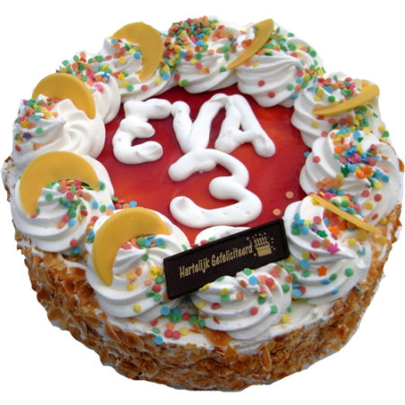

Verjaardagsijstaart op maat
Laat al uw fantasieën op hol slaan: een eigen ijstaart die er niet alleen heerlijk uitziet, maar ook fantastisch smaakt.
- Kies 2 smaken. Vraag ons welke smaken er op dat moment zijn.
- Kies een maat. 8-10 personen € 28,75 of 18-20 personen € 54,95.
- Een naam of getal erop? Kort, maximaal 6 letters.
- Wanneer haalt u hem op? Geef de datum en het tijdstip door.